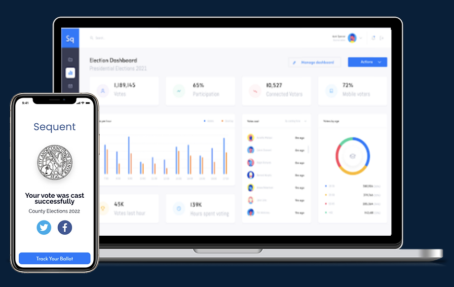

Open Source, End-to-End Verifiable Online Voting Platform For Elections
Sequent is a pioneer and leader in developing open source online voting technology that delivers trust and legitimacy in national, local and private elections.

Sequent is a pioneer and leader in developing open source online voting technology that delivers trust and legitimacy in national, local and private elections.